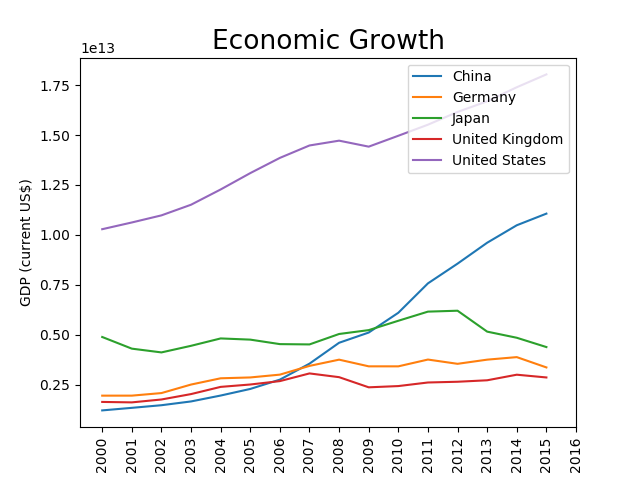

Classified by many as the most important economic indicator, I coudln't resist to have a special section for the Gross Domestic Product (GDP).
It is a measure of economic growth defined as the value of all final goods and services produced by a country in a certain period of time.
To conduct the following analysis, data was taken from the World Bank public database, which include 189 countries.

Once plotting the historical GDP for the 5 bigger economies, it became evident that the United States has the bigger economy by far, followed by China and Japan. This was not always true, since China came to second place in 2009 when it overcome Japan after a methoric growth started in 2005.
The figure show us the historical size of economy, but sometimes we are more intreted in yearly (or quarterly) growth rate which help us to define a ressesion and might be used to evaluate the performance of the economic authorities.
Another important questions that arrises from this indicator has to do with its composition. What are the drivers behind the economic growth of a country. Usually, PIB is explained by the sum of government spenditure, consumption, investment and net exports. There we can see, for example, that government spenditure is higher in European nations than in the US.
Finally, it is important to keep in mind the limitations of this indicator. First, it does not measure the transactions of any ilegal good or service. Second, it tells us about the economy in an aggregated level, but does not say anything about the distribution of this wealth.